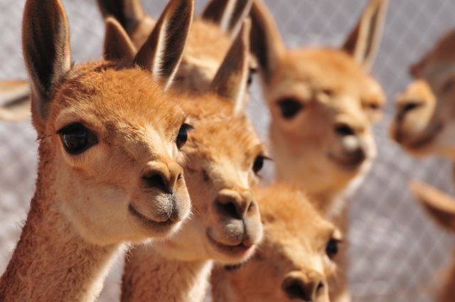

vicuña
vicuna
Distribucion
La vicuña (Vicugna vicugna), —del quechua wik'uña— es una especie de mamífero artiodáctilo de la familia de los camélidos y del grupo de los camélidos sudamericanos que vive en el altiplano andino, en el norte de Argentina, el oeste de Bolivia, el noreste de Chile, sectores de los Andes de Ecuador, y en las alturas andinas del Perú, país que posee la principal población de la especie.
La alpaca es una especie domesticada que deriva de la vicuña, con aportes genéticos menores de llama.
Biología
Las vicuñas son los camélidos más pequeños, pesan entre 40 y 50 kg y tienen una longitud de 80 cm. Son silvestres. Su color es beige o vicuña (marrón claro rojizo) en el lomo y blanco en la zona ventral y las patas, con variaciones dependiendo de las zonas geográficas donde habitan. Las poblaciones norteñas son más oscuras y tienen un mechón en la parte delantera de pelos largos y blancos (mechón pectoral). Las vicuñas tienen las patas largas y delgadas, terminadas en almohadillas, aptas para caminar sobre varios tipos de suelos, incluso los pedregosos. la fibra de su lana está entre las más finas del mundo, midiendo 15 micrones de diámetro. El pelaje es denso, formado por fibras delgadas que crecen muy juntas, con el objetivo de proteger al animal tanto del frío como de la lluvia y el viento. Si las fibras fueran más gruesas y crecieran más distanciadas, dejarían pasar el aire frío y el agua de la lluvia.
Enlaces a otras páginas
 Inicio
Inicio Condor
Condor Vizcacha
Vizcacha Puma
Puma Vicuna
Vicuna Oso de anteojos
Oso de anteojos